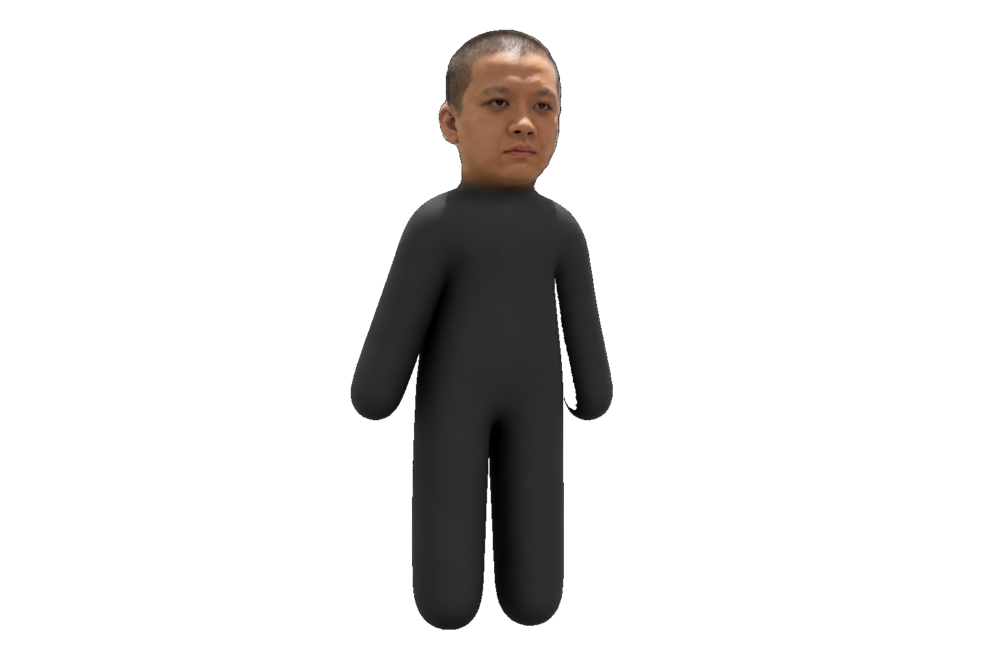

何老師
不要喊我岳父！
街機挑戰
01
音效 ON
SCORE / 得分
00000
TIME LEFT / 剩餘秒數
60
SEC
PERSONAL BEST / 最高分
00000
校園防衛戰
準備開打
60 SECONDS. NO MORE 岳父.
何老師，
不要喊我
岳父！
他又來了。換好武器，守住你的稱呼。
圖片載入中…
點擊角色攻擊 · 1 / 2 或下方按鈕切換武器
岳父！

TIME'S UP / 挑戰結束
稱呼保衛成功？
0
再戰 60 秒 ↗
球棒有效區域 / NEAR RANGE
1
CLOSE RANGE
球棒
近距離 · +150 分 · 揮擊範圍大
使用中
2
LONG RANGE
槍
全距離 · +100 分 · 精準點擊
切換